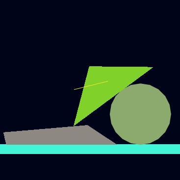

Demos
LSTD
A C++ library that aims to replace the standard C++ library
with a much much simpler and, in my opinion, understandable API.
An extension to lstd. Provides high-level APIs for displaying and
managing windows, creating and drawing graphics.
Notebooks
In this project we explore ways to classify news written in Bulgarian
in two classes: real or "fake" (click-bait), using standard supervised
machine learning methods.
Here we do exploratory data analysis on a large movie dataset.
We tidy and cleanup the data and then check pre-formulated hypothesis
on it.
light-std
A C++ library that aims to replace the standard C++ library
with a much much simpler and, in my opinion, understandable API.
It is completely stand-alone and written from scratch with simplicity in mind.
light-std-graphics
An extension to lstd. Provides high-level APIs for displaying and
managing windows, creating and drawing graphics.
The low-level graphics API we currently use is DirectX.

This notebook is an in-depth tutorial on the mathematics behind
implementing a rigid body physics engine. We'll explore
how you can take equations from physics and apply them in discrete
time steps, how to check for intersecting objects, and how to generate
a collision response.